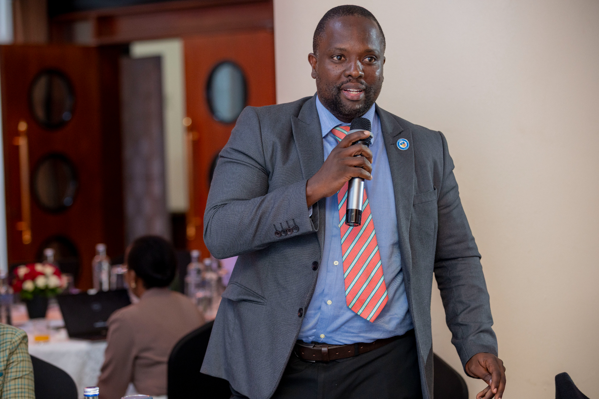

Strategy 1.0
A five-year roadmap.
Three strategic objectives, one integrated framework, and a UGX 11.15 billion investment plan to advance nutrition science and its translation into policy across Uganda.

2026-2030
Three strategic objectives, one integrated framework, and a UGX 11.15 billion investment plan to advance nutrition science and its translation into policy across Uganda.
Ending malnutrition is not a nutrition problem alone — it is a knowledge problem.— SUN-ARINU Strategy 1.0
Enhanced nutrition training, research, and innovation contributing towards ending all forms of malnutrition in Uganda by 2030.
Creating a strong, coordinated, and vibrant network for nutrition training, research, and innovation in Uganda.
To harness the expertise of academia, researchers, and research institutions for Scaling Up Nutrition in Uganda.

Bring academia, researchers, and research institutions onto one coordinated platform to advance national nutrition priorities.
Promote multi-sectoral, interdisciplinary nutrition research, training, and innovation to sharpen programming and practice.

Facilitate the translation of research evidence into national and sub-national nutrition policies and planning frameworks.
SUN-ARINU reports to the SUN Focal Office under the Office of the Prime Minister and is anchored within the Ministry of Education and Sports. It coordinates closely with MOH, MAAIF, MoGLSD, MoLG, MoWE, MoSTI, KCCA, UBOS, NPA, and fellow SUN networks.
Government leads co-financing, with development partners, private sector, and the network's own membership and ethics-review income covering the balance.